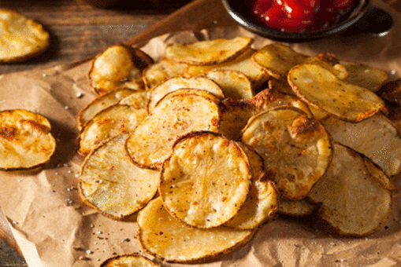

Baked Potato Chips

How to Make Baked Potato Chips
Homemade baked potato chips need only 3 ingredients, and once you perfect these you'll never go back to bagged potato chips again. This is a basic recipe, seasoned only with salt, but the possible flavor combinations are endless. You don’t even need to peel the potatoes! All ovens are not created equal, so paying close attention at the end helps to get the perfect doneness. If the chips need more cooking time, check them every 2 minutes—they brown quickly.
Ingredients:
- 1 pound Yukon gold potatoes
- 2 teaspoons olive oil
- 1/2 teaspoon sea salt
Steps:
- Preheat the oven to 400 degrees (200 degrees C). Line 2 baking sheets with paper towels.
- Using a mandoline, slice potatoes on the thinnest setting, about 1/8-inch thick. Place slices on the paper towel-lined baking sheets.
- Place a layer of paper towels over the potato slices. Let stand 5 minutes. Press down on paper towels to remove excess moisture.
- Discard paper towels. Place potato slices in a large bowl. Add oil and salt. Gently stir to combine.
- Line baking sheets with parchment paper. Divide potato slices between baking sheets in an even layer.
- Bake in the preheated oven for 10 minutes. Using tongs, flip each chip over. Bake until golden, about 10 minutes more.
- Remove chips from the oven and cool for 5 minutes; they will become more crisp as they cool.